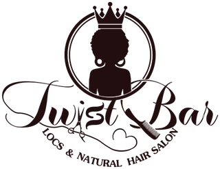

No walk-ins
The Twist Bar is by appointment only. Book your time on Booksy before you come in.
Visit
4135 Rivers Ave, Unit A, North Charleston, SC 29418. By appointment only, Tuesday to Saturday.
Find the studio

By appointment only · no walk-ins
Hours
| Tuesday | 9 AM – 7 PM |
|---|---|
| Wednesday | 9 AM – 7 PM |
| Thursday | 9 AM – 9 PM |
| Friday | 9 AM – 9 PM |
| Saturday | 7 AM – 3 PM |
| Sunday | Closed |
| Monday | Closed |
Hours from Tia's live Booksy calendar. Booksy always shows the real openings.
Booking, step by step
Open Tia’s Booksy page and pick your service. Not sure? Book a $25 consultation.
Booksy shows Tia’s live openings from Tuesday to Saturday. Choose the one that works for you.
There is no waiting area and no walk-ins, so come at your appointment time, ready to get twisted.
Policies
The Twist Bar is by appointment only. Book your time on Booksy before you come in.
There is no waiting area at the studio, so plan to arrive at your appointment time.
Tia’s payment and cancellation policy is shown on Booksy when you book. Please read it before you confirm.
Visit FAQ
No. The Twist Bar is by appointment only, and there is no waiting area. Book your time on Booksy and arrive at your appointment time.
No. There is no waiting area at the studio, so please plan to arrive at your appointment time.
Book on Booksy: choose your service, then pick an open time. Not sure what to book? Start with a $25, 30-minute consultation.
4135 Rivers Ave, Unit A, North Charleston, SC 29418. Use Get directions to open Google Maps.
Tuesday and Wednesday 9 AM to 7 PM, Thursday and Friday 9 AM to 9 PM, and Saturday 7 AM to 3 PM. Closed Sunday and Monday. Booksy shows Tia's live openings.
Call (843) 478-3655, or message The Twist Bar on Instagram at @get_twistedat_tb.
Ready when you are
Pick your service, pick your time, and Tia will take it from there.